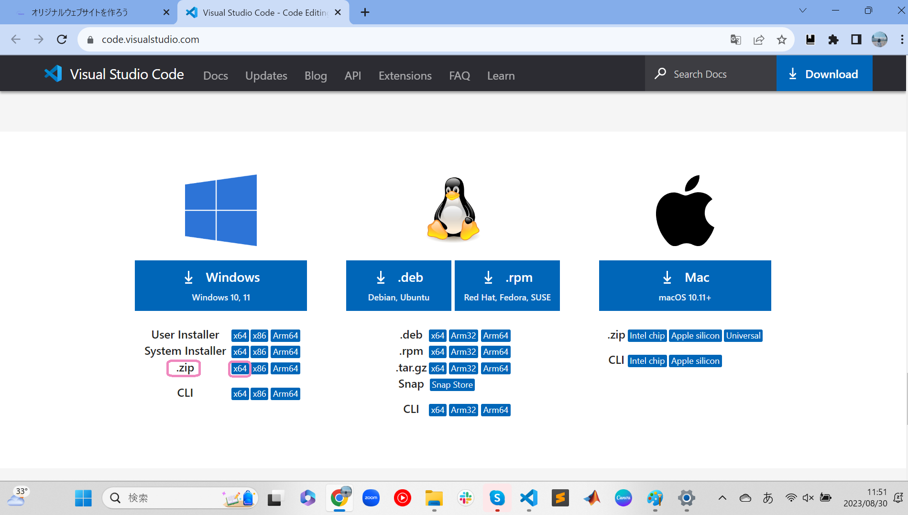
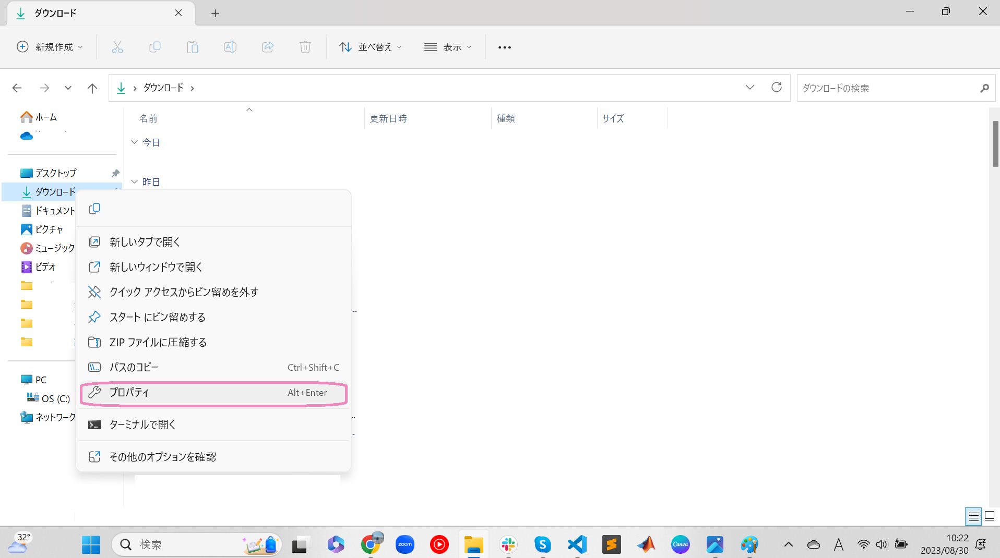
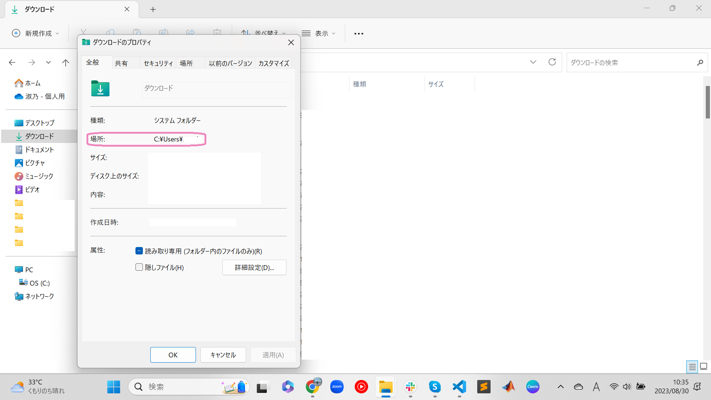
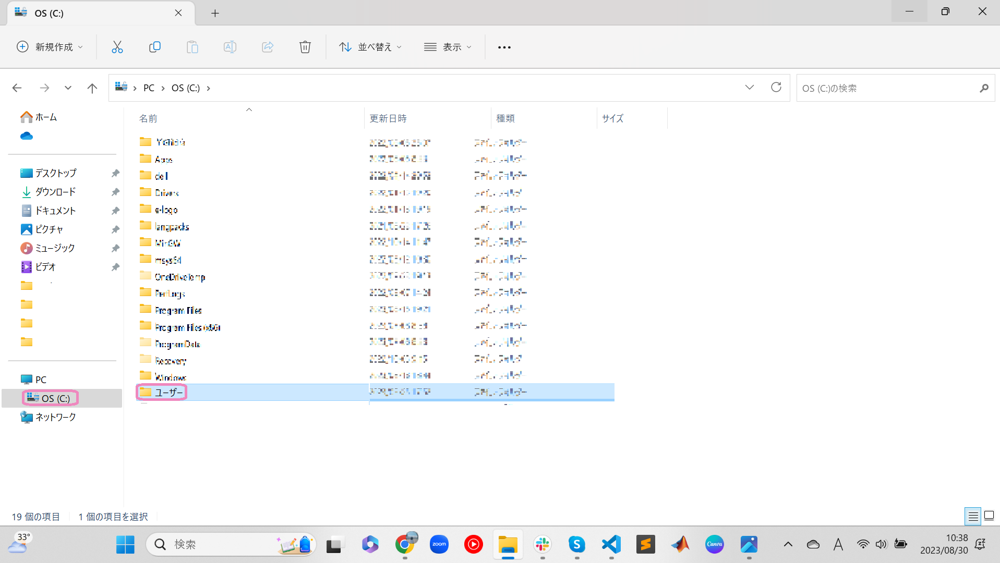
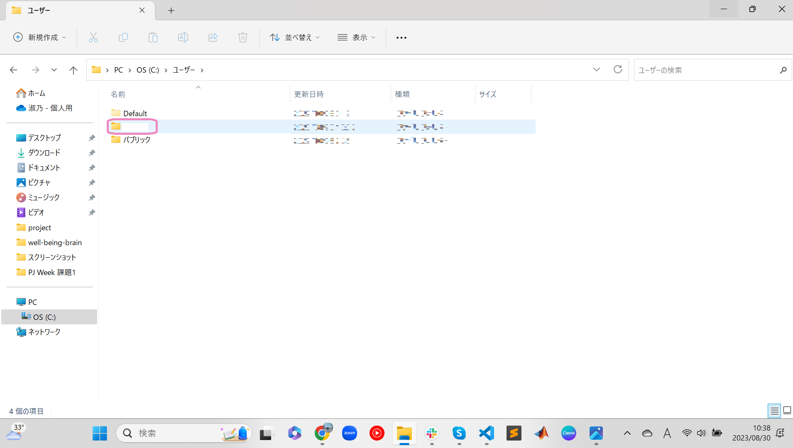
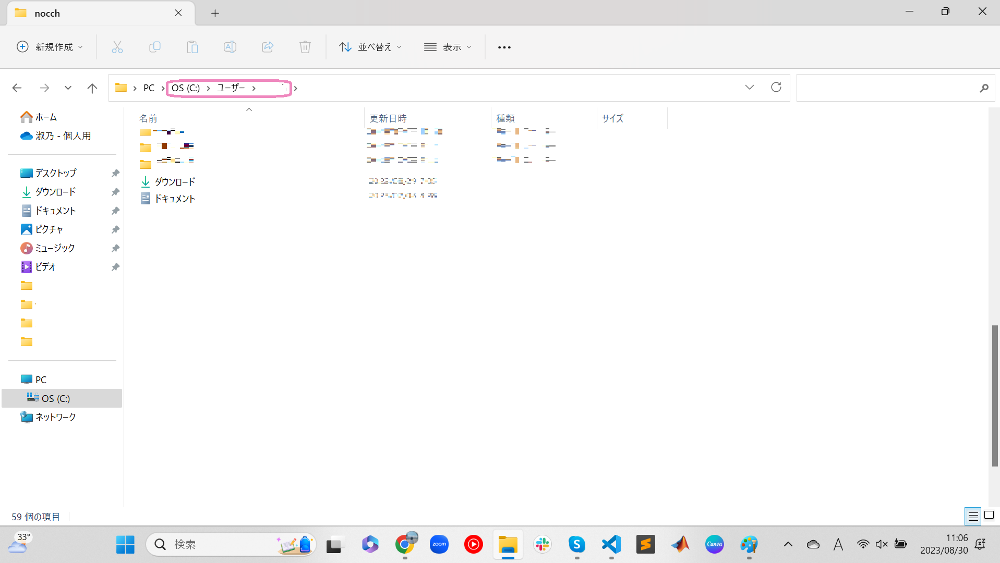
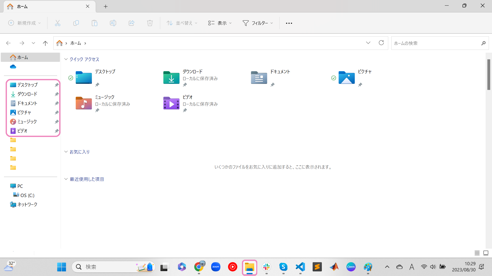
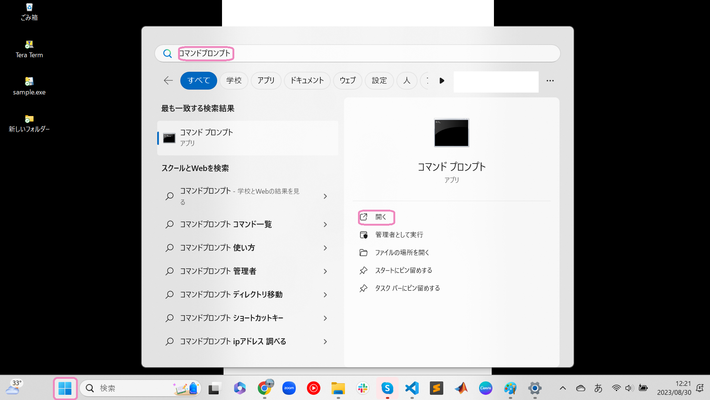

オリジナルウェブサイトを作ろう
STEP1 開発環境を準備しよう
1. パソコンのバージョンについて知ろう
- windowsマークをクリックし、設定を選択
- システム->バージョン情報をクリックする
- システムの種類を見て何ビットか(x数字にも注目)確認してね。
私のパソコンの場合は64bit(x64)でした。
2. Google Chromeをインストールしよう
公式サイトからダウンロードしよう※64bitか32bitかによってダウンロードするファイルが違うよ3. Visual Studio Codeをインストールしよう
公式サイトからダウンロードしよう※64bitか32bitかによってダウンロードするファイルが違うよこのアプリでコードをかくよ。
- ページにアクセスしてスクロール
- .zipの該当するビット数のものをダウンロード 
- エクスプローラー->ダウンロードからダウンロードしたzipファイルを右クリックする
- すべて展開をクリック
- 展開(E)をクリック
- 同じファイル名で.zipでないのがダウンロードにあると思うので
- ピン止めされた項目の上で右クリック
- プロパティをクリック


場所はC:¥Users¥ユーザ名だったかな??
3.PC->OS(C:)->ユーザー->ユーザー名を開いてみよう
  ピン止めされた項目は見つかったかな？？
PC->OS(C:)->ユーザー->ユーザー名の中にフォルダを作ってデータを管理するのが一般的。4.PC->OS(C:)->ユーザー->ユーザー名に新しいフォルダを作ってみよう
Ctrl + Shift + Nで作成できるよ(何もないところを右クリック->新規作成->フォルダでも可)
フォルダ名は英語表記でなるべくローマ字ではなく英語として意味を持つものがおすすめ。STEP3 HTMLについて学ぼう
主な構成
// HTMLの主な構成。
<!DOCTYPE html> //htmlという言語でかいていることを宣言している
<html> //html開始
<head> //タブの中の情報を宣言
//タブに表示されるタイトルを宣言
<title>your site name</title>
//CSSとのリンクづけを行っている
<link rel="stylesheet" type="text/css" href="styles.css">
//タブの左に表示される画像をリンクづけしている <link rel="icon" href="???.png">
</head>
<body>
<header>
</header>
<main>
</main>
<footer>
</footer>
</body>
</html>
基本的なかき方
- 見出しごとに表記が異なります。
- 文字の大きさを決めるものではないことに注意しましょう。
// このように、見出しを区別することができます。
<h1>1番目の見出し</h1>
<h2>2番目の見出し</h2>
<h2>3番目の見出し</h2>
<p>内容記述</p>
4. GitHubに登録しよう
公式サイトからサインアップしようここでwebサイトを公開するよ
STEP2 パソコンのファイルとフォルダの管理について学ぼう
フォルダとは書類を収納するファイルの役割をし、ファイルは書類1枚1枚を指します。フォルダを作成してその中にファイルを収納していくよ。
1.エクスプローラーを開いてみよう
左上にあるデスクトップ、ダウンロード、ドキュメントなどピン止めされた項目を見つけてみよう。
2.ピン止めされた項目の上で右クリック->プロパティ->全般->場所で収納場所を確認してみよう
STEP4 CSSについて学ぼう
基本的なかき方
// CSSのかき方
header {
background-color: white;
color: black;
}
.logo img {
width: 150px;
height: auto;
}classの概念について
// HTMLのclassと結びつけて考える
//HTML
<div class = "classic">
</div>
//CSS
.classic{
background-color: white;
color: black;
}
STEP5 VScode(Visual Studio Code)でホームページを作ろう
1.VScodeでフォルダを開こう
- VScodeを開く
- 左上のファイル(F)をクリック
- フォルダを開くを選択
- フォルダを選択
- ターミナルでecho >ファイル名と入力し、新しいファイルを作成する。
STEP6 作成したホームページを公開しよう
1.GitHubにpushしよう
- コマンドプロンプトを開きます 
git -vと入力し、Enterを押す- バージョンが表示されれば、既にインストール済み。そうでなければ
brew install gitと入力し、Enterを押す - GitHubにpushしたいファイルの変更が終わったら、左の上から3番目のマークをクリックする
- GitHubに公開をクリックし、指示に従って設定を行う
- pushするファイルの隣にカーソルを持っていくと
＋が表示されるのでクリックする - ステージされている...にpushしたいファイルがあるかを確認
- コメントを入力する
- コミットをクリックする
- 変更の同期をクリックする
- OKをクリックする
- GitHubが更新されているか確認してみてください
- GitHubのページを開いてSettingsをクリックする
- 左の項目からPagesをクリックする
- Visit siteをクリックする
※64bitか32bitかによってダウンロードするファイルが違うよ
2.公開したサイトを見てみよう
サイトは見れましたか